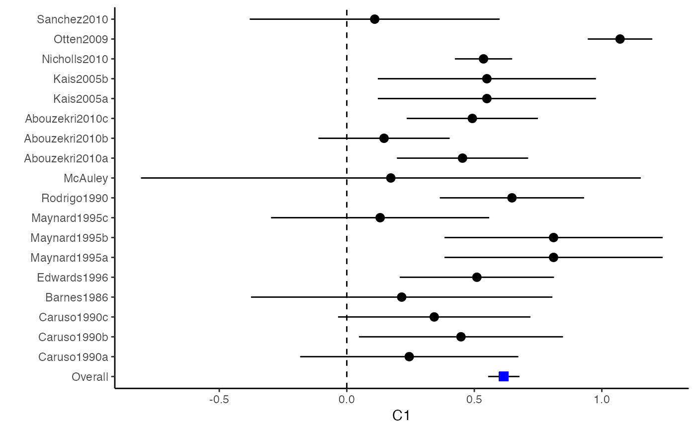
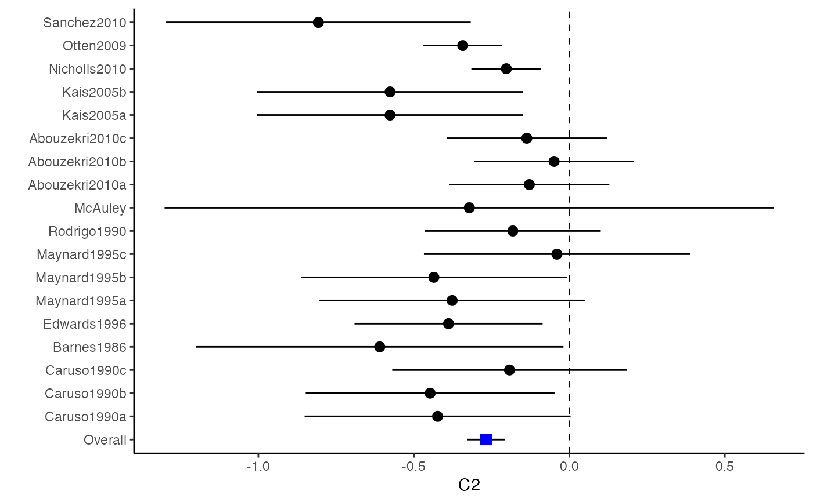
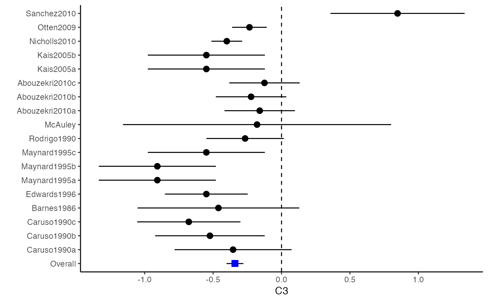
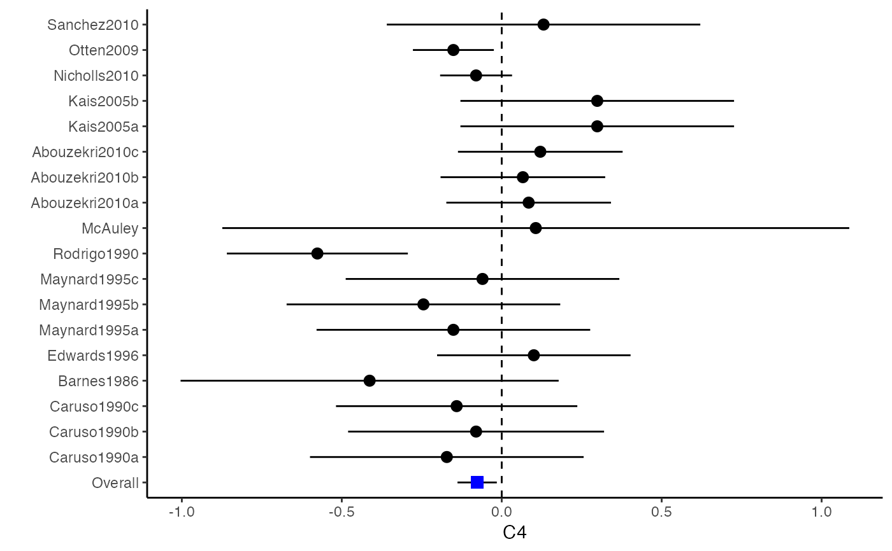
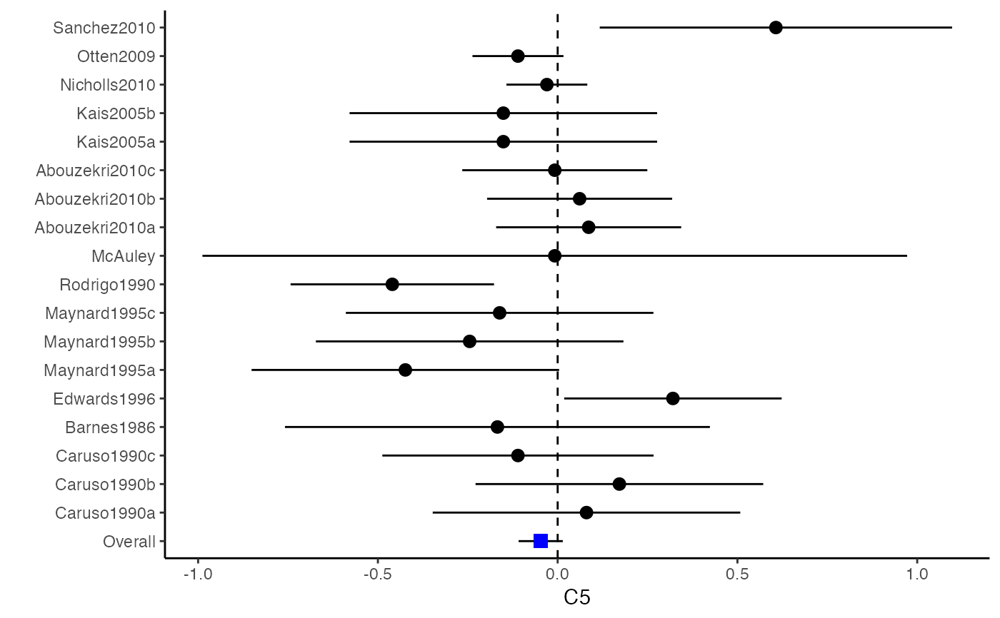
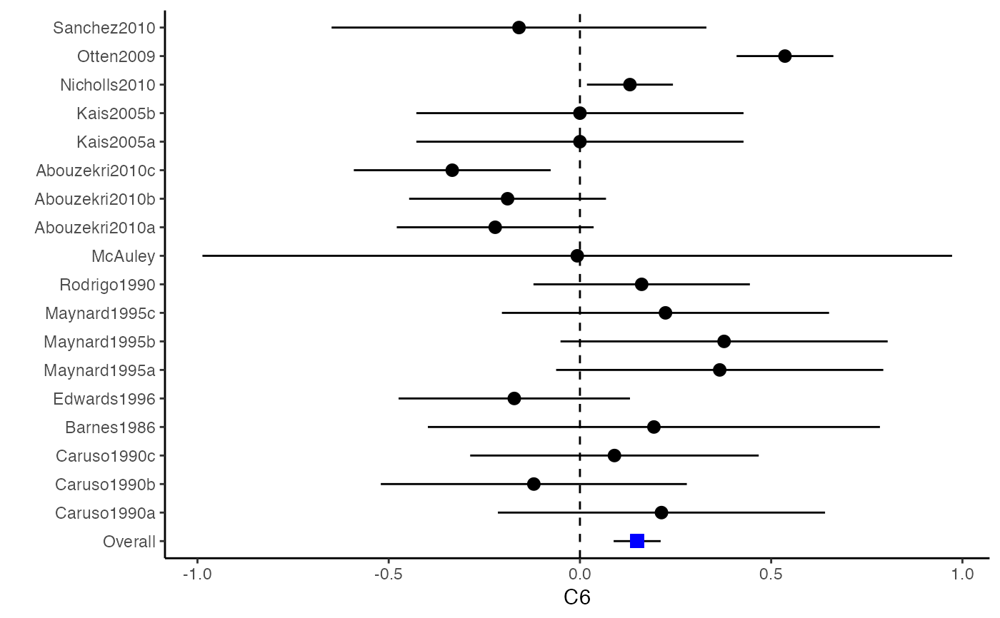

metafixed.RdThe function metafixed performs fixed-effects multivariate meta-analysis with the generalized least squares (GLS) method.
metafixed(y, Slist)
| y | A \(N \times p\) matrix or data frame that stores effect sizes from \(N\) primary studies. Usually the output value |
|---|---|
| Slist | A \(N\)-dimensional list of \(p(p+1)/2 \times p(p+1)/2\) matrices that stores within-study (co)variance matrices of the estimated effect sizes for each one of the \(N\) studies. Usually the output value |
Min Lu
Estimators were calculated from the generalized least squares approach.
The metafixed function typically returns a list object of class "metafixed" representing the meta-analytical model. Use the summary function to check the analysis results.
Ahn, S., Lu, M., Lefevor, G.T., Fedewa, A. & Celimli, S. (2016). Application of meta-analysis in sport and exercise science. In N. Ntoumanis, & N. Myers (Eds.), An Introduction to Intermediate and Advanced Statistical Analyses for Sport and Exercise Scientists (pp.233-253). Hoboken, NJ: John Wiley and Sons, Ltd.
Cooper, H., Hedges, L.V., & Valentine, J.C. (Eds.) (2009). The handbook of research synthesis and meta-analysis. New York: Russell Sage Foundation.
###################################################### # Example: Craft2003 data # Preparing covariances for multivariate meta-analysis ###################################################### data(Craft2003) computvcov <- r.vcov(n = Craft2003$N, corflat = subset(Craft2003, select = C1:C6), method = "average") y <- computvcov$ef Slist <- computvcov$list.vcov ##################################################### # Running fixed-effects model using "metafixed" ##################################################### MMA_FE <- summary(metafixed(y = y, Slist = Slist)) MMA_FE$coefficients#> Estimate Std. Error z Pr(>|z|) 95%ci.lb 95%ci.ub #> C1 0.61556515 0.03136377 19.626629 0.000000e+00 0.55409328 0.67703702 #> C2 -0.26790534 0.03135300 -8.544807 0.000000e+00 -0.32935610 -0.20645459 #> C3 -0.34029017 0.03135425 -10.853078 0.000000e+00 -0.40174337 -0.27883696 #> C4 -0.07679820 0.03135464 -2.449341 1.431179e-02 -0.13825217 -0.01534424 #> C5 -0.04722136 0.03135158 -1.506188 1.320190e-01 -0.10866933 0.01422661 #> C6 0.14959218 0.03136549 4.769324 1.848453e-06 0.08811695 0.21106741############################################################## # Plotting the result: ############################################################## plotCI(y = computvcov$ef, v = computvcov$list.vcov, name.y = NULL, name.study = Craft2003$ID, y.all = MMA_FE$coefficients[,1], y.all.se = MMA_FE$coefficients[,2], up.bound = Inf, low.bound = -Inf)#> $`Plotting C1`#> #> $`Plotting C2`#> #> $`Plotting C3`#> #> $`Plotting C4`#> #> $`Plotting C5`#> #> $`Plotting C6`#>